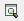
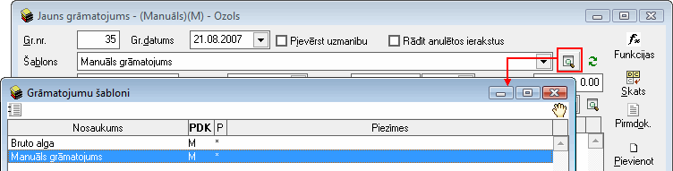
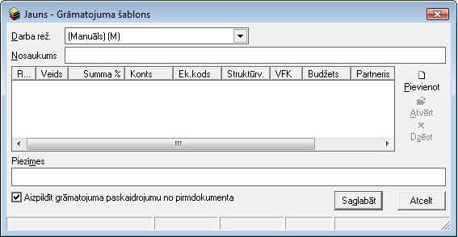
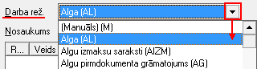
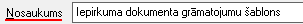
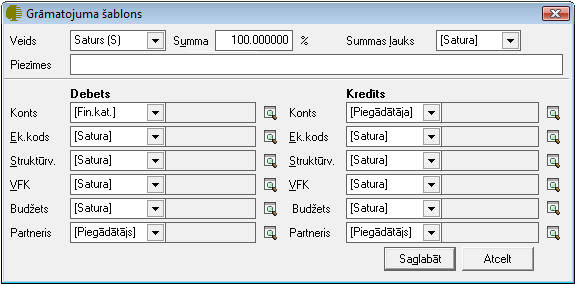
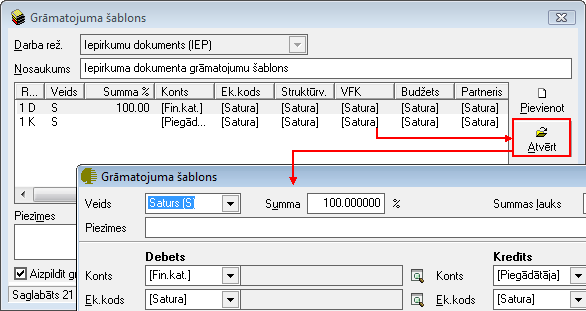

Grāmatojumu šabloni¶
Grāmatojumu šablonu sarakstā tiek saglabātas izveidotās kontējumu shēmas, kas tiek izmantotas dokumentu grāmatojuma automatizētā izveidošanā. Visi izveidotie grāmatojumu šabloni tiek saglabāti grāmatojumu šablonu sarakstā.
Grāmatojumu šablons sastāv no virsraksta daļas un satura. Šablonam var pievienot neierobežotu skaitu satura ierakstu. Grāmatojuma šabloni jāveido atsevišķi katram dokumenta veidam. Grāmatojuma šablonā var noteikt, ka summas tiks ņemts no pirmdokumenta virsraksta vai satura. Tā pat šablonā var sadalīt summas procentuāli pa kontiem, pieņemot, ka pirmdokumenta kopsumma ir 100%.
Jauna grāmatojuma šablona pievienošana¶
Jaunu grāmatojuma šablonuiespējams pievienot divos veidos:
1.No Grāmatojuma ekrāna formas¶
Katra pirmdokumenta grāmatošanas laikā no grāmatojuma ekrāna formas ar
{kind=link}
komandpogas palīdzību var atvērt grāmatojuma šablonu sarakstu:
{kind=link}
Tiks atvērts šablonu saraksts tikai grāmatojamā dokumenta tipam. No grāmatojumu šablonu saraksta var izveidot jaunu šablonu (.. image:: images_ozols/24933.png
- scale
100%
Pievienot), atvērt un labot jau izveidotu šablonu (.. image:: images_ozols/24932.png
- scale
100%
Atvērt), izveidot jaunu šablonu uz esošā šablona bāzes (.. image:: images_ozols/24940.png
- scale
100%
Kopēt), kā arī dzēst šablonu (

Dzēst).
Lai veidotu jaunu šablonu, jāizmanto komanda Pievienot. Komandas darbam ar grāmatojumu šabloniem var izsaukt no rīku joslas vai ar peles labās pogas palīdzību.
2.Grāmatojumu šablonu sarakstā pievienojot jaunu ierakstu¶
Lai pievienotu jaunu Grāmatojumu šablonu, rīku joslājānospiež poga.. image:: images_ozols/24708.png
- scale
100%
un tiks atvērts jauns logs:
{kind=link}
1. Nepieciešams norādīt atbilstošo darba režīmu, kāda dokumenta grāmatošanai šis šablons tiek veidots. Katram pirmdokumenta veidam jāveido atsevišķi grāmatojuma šabloni. Darba režīms var noteikt īpašu, konkrētam grāmatojuma tipam nepieciešamu datu izvēles iespēju. Grāmatojos pirmdokumentu, izvēlei tiek parādīti tikai atbilstošā tipa grāmatojumu šaboni:
{kind=link}

Katrs grāmatojuma šablons tiek sagatavots konkrētam darba režīmam, tāpēc ir svarīgi norādīt, kāda dokumenta grāmatošanai tas tiek veidots. Atkarībā no darba režīma, grāmatojuma šablonā tiek parādītas nedaudz atšķirīgas izvēles lauku aizpildīšanai, piemērojoties grāmatojamā dokumenta specifikai.
2. Jānorāda grāmatojuma šablona nosaukums (Lietotāja izvēlēts, brīvā tekstā ierakstīts nosaukums). Grāmatojuma šablona nosaukums tiek izmantots, lai grāmatojot pirmdokumentu, to varētu labāk izvēlēties no šablonu saraksta. Nosaukumā jāietver informācija, kas ļauj šablonu nekļūdīgi identificēt starp citiem grāmatojumu šabloniem:
{kind=link}
Nepieciešams pievienot grāmatojuma šablona satura rindu nosacījumus
Šablonā var pievienot neierobežotu skaitu ierakstu - kontējumu. Grāmatojuma šablona satura rindas ierakstā jānorāda šablona ieraksta veids, konts, var noteikt izmantojamo finanšu kategoriju (ekonomisko kodu), struktūrvienību, projektu, nozari, partneri.
Lai aizpildītu Grāmatojuma šablona Saturu, dokumenta satura daļā nepieciešams nospiest

un tiks atvērts operācijas satura logs, kurā nepieciešamsnorādīt satura ierakstu nosacījumus:
{kind=link}
Grāmatojuma šablonā iespējas izvēlēties Kategoriju (Ek.kods), Struktūrvienību, Projektu, Nozari (VFK), Budžetuun Partneri ierobežo izmantojamo Dimensiju konfigurācija un konta apraksts Kontu plānā , kur var būt noteikts nelietot uzskaiti pa partneriem vai nelietot kādu no dimensijām. Ja kāda no dimensijām netiek lietota, dimensijas lauks grāmatojuma šablonā neparādās.
Grāmatojuma šablona satura nosacījumu ievades instrukcijas: Grāmatojumu šablonu veidošana un pielietošana
Šablona rindas tiek numurētas automatizēti, un rindas numurs ir informatīvs. Viens kontējuma pāris tiek parādīts kā divi ieraksti, piemēram 1D (pirmā rinda, debets) un 1K (pirmā rinda, kredīts).
Kad visi nepieciešamie lauki ir grāmatojuma šablona saturā aizpildīti, lai saglābātu Grāmatojuma šablona satura ierakstu, nepieciešams nospiest pogu

. Nospiežot pogu

, satura ieraksts saglabāts netiks.
Grāmatojuma šablonasatura ierakstu labošana¶
Lai veiktu labojumus,satura ierakstunepieciešams atvērt, izmantojot rīku joslas pogu

(ALT+A), unatvērtajāierakstā iespējams veiktnepieciešamos labojumus:
{kind=link}
Pēc labojumu veikšanas, veiktā izmaiņas iespējams .. image:: images_ozols/24615.jpg
- scale
100%
vai
.
Saglabājot grāmatojumu šablonu, tas būs pieejams Grāmatojumu šablonu sarakstā unšo šablonu būs iespējams izvēlēties konkrētam darba režīmam, balstoties uz grāmatojuma šablona virsrakstānorādīto darba režīmu.